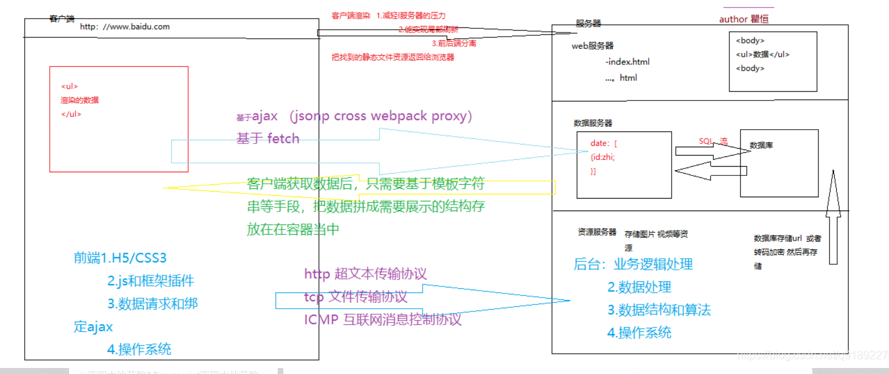

# 简识 Ajax
前两天我们大致的介绍了一些 jquery 和 bootstrap。相信你对他们已经有了一个初步的了解，但我想说的是，这些仅仅是框架而已，他们的作用仅仅是帮助我们更轻便、跟简洁的构建页面。
今天，我们来说一下什么叫 ajax
在这之前，我们先简单介绍一下前后端交互的过程。

# 前后端分离
在介绍前后端分离的过程的时候，我们先简单了解一下什么叫异步什么叫同步
- 同步请求：
- 顺序处理，即当我们向服务器发出一个请求时，在服务器没返回结果给客户端之前，我们要一直处于等待状态直至服务器将结果返回到客户端，我们才能执行下一步操作。例如普通的 B/S 模式就是同步请求（注：B/S 模式 也即服务器与浏览器通信主要采用 HTTP 协议；通信方式为 “请求 —— 响应”，浏览器发出请求；服务器做出响应。）
- 异步请求：
- 并行处理，当我们向服务器发出一个请求时，在服务器没返回结果之前，我们还是可以执行其他操作。例如 AJAX 技术就是异步请求
了解了同步和异步的区别之后，我们再来介绍一下在前端页面中请求的方式有哪些
- Post 请求
- Get 请求
post 和 get 两者并没有多大差别，w3c 标准答案为：
- GET 在浏览器回退时是无害的，而 POST 会再次提交请求。
- GET 产生的 URL 地址可以被 Bookmark，而 POST 不可以。
- GET 请求会被浏览器主动 cache，而 POST 不会，除非手动设置。
- GET 请求只能进行 url 编码，而 POST 支持多种编码方式。
- GET 请求参数会被完整保留在浏览器历史记录里，而 POST 中的参数不会被保留。
- GET 请求在 URL 中传送的参数是有长度限制的，而 POST 么有。
- 对参数的数据类型，GET 只接受 ASCII 字符，而 POST 没有限制。
- GET 比 POST 更不安全，因为参数直接暴露在 URL 上，所以不能用来传递敏感信息。
- GET 参数通过 URL 传递，POST 放在 Request body 中。
简而言之，就我个人开发习惯而言，总结如下：
- 发送请求的时候 Post 更安全
- 仅仅只是想要页面渲染，无需太多交互动作时 Get 请求足矣
介绍完这些之后我们开始了解一下具体的应用过程